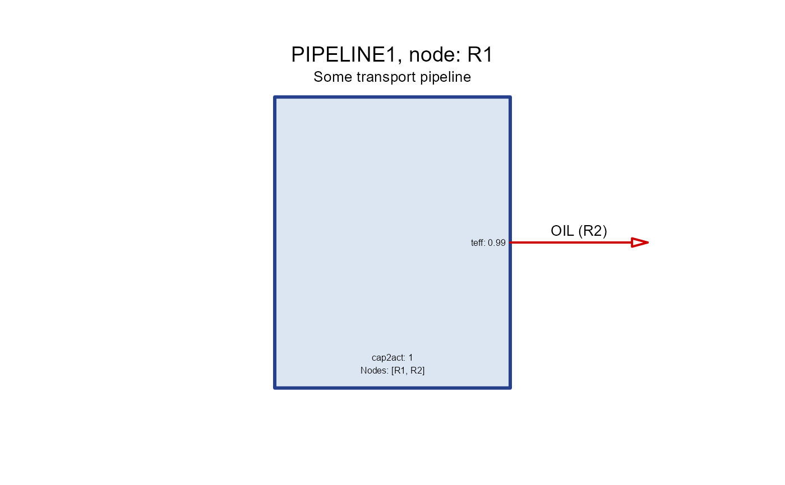
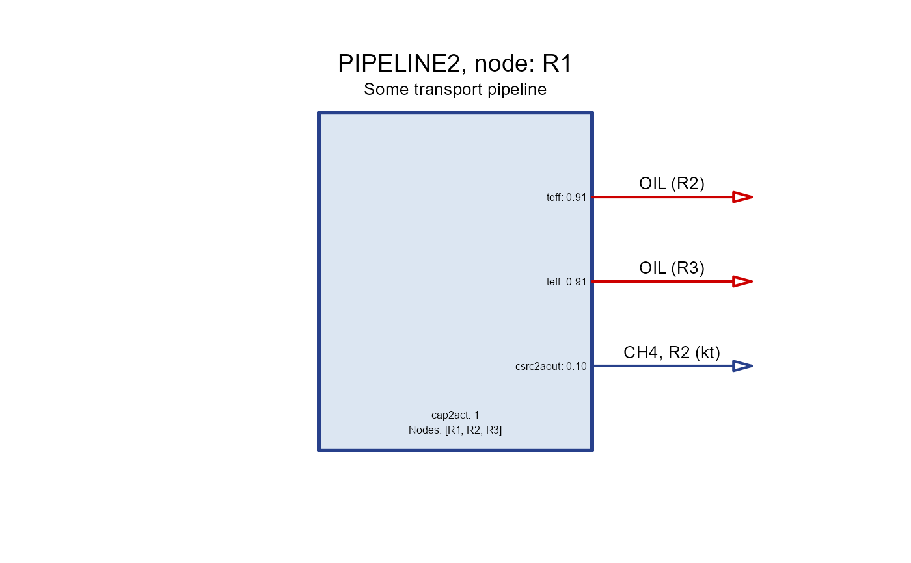
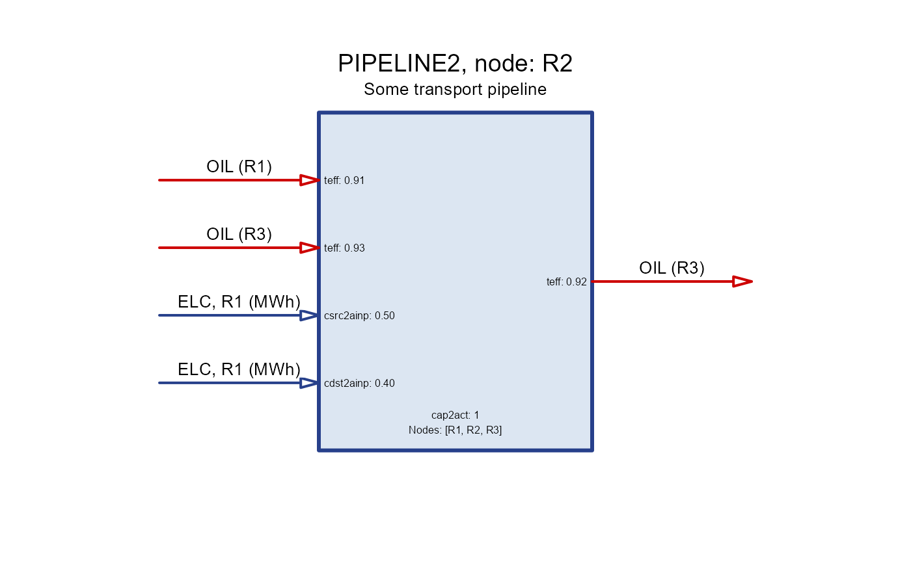
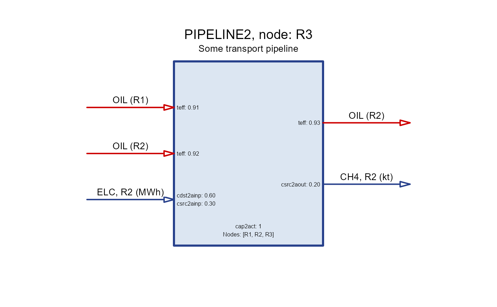

Constructor for trade object.
Usage
newTrade(
name = "",
desc = "",
commodity = character(),
geoframe = character(),
routes = data.frame(),
trade = data.frame(),
fixom = data.frame(),
varom = data.frame(),
cluster = data.frame(),
invcost = data.frame(),
olife = data.frame(),
start = data.frame(start = -Inf, stringsAsFactors = FALSE),
end = data.frame(end = Inf, stringsAsFactors = FALSE),
vintage = data.frame(),
capacity = data.frame(),
aux = data.frame(),
aeff = data.frame(),
weather = data.frame(),
cap2act = 1,
optimizeRetirement = FALSE,
misc = list(),
...
)Arguments
- name
character. Name of the trade object, used in sets.
- desc
character. Description of the trade object.
- commodity
character. The traded commodity short name.
- geoframe
character. Optional. The geoscale level this object's regions are expressed at; unset (the default) derives it from the region codes. See
technology@geoframefor the full rule, including the consistency checks it turns on.tradehas noregionslot: the level is the one its ROUTES are expressed at, checked against everysrcanddst. A corridor delivers atdst, so its level may not be coarser than the traded commodity's – moving a state-level commodity between nations would have to distribute it among the destination's children, which the balance layer does not do.- routes
data.frame. Source and destination regions. For bivariate trade define both directions in separate rows.
- src
character. Source region of the route.
- dst
character. Destination region of the route.
- trade
data.frame. Technical parameters of trade per directed route. Two kinds of flow bound live here and they are not interchangeable:
ava.*is ABSOLUTE, in physical commodity units per timeslice, and does not scale with capacity;af.*is RELATIVE, a fraction of the object's own capacity (cap2actxvTradeCapx the timeslice share), and is the direct analogue oftechnology@af. Useaf.*to rate individual lines of a multi-route object, where the absolute bound would have to be a number correct for exactly one capacity – and capacity is the decision.- vintage
character. Vintage label selecting the variant this row applies to, NA for every vintage. See the
vintageslot.- cluster
character. Cluster (loss tranche) label selecting the tranche this row applies to, NA for every tranche. See the
clusterslot.- src
character. Source region of the flow, NA for every source region on the route.
- dst
character. Destination region of the flow, NA for every destination region on the route.
- year
integer. Year to apply the parameter, NA for every year.
- timeslice
character. Time timeslice to apply the parameter, NA for every timeslice.
- ava.lo
numeric. Lower bound on the traded flow from
srctodst, in physical commodity units per timeslice.- ava.up
numeric. Upper bound on the traded flow from
srctodst, in physical commodity units per timeslice.- ava.fx
numeric. Fixed value of the traded flow from
srctodst, in physical commodity units per timeslice. This parameter overridesava.loandava.up.- af.lo
numeric. Lower bound on the flow from
srctodstas a FRACTION of the object's capacity:af.lo x cap2act x vTradeCap x share. Forces a minimum loading on that direction.- af.up
numeric. Upper bound on the flow from
srctodstas a FRACTION of the object's capacity:af.up x cap2act x vTradeCap x share. This is how a single trade object carrying several routes gives each line its own rating –af.up = 0.5on one leg limits it to half the corridor whatever the corridor turns out to be. Note thataf.upof 1 is already implied byeqTradeCapFlowand cannot bind.- af.fx
numeric. Fixed loading of the direction
src->dstas a fraction of capacity. Overridesaf.loandaf.up.- afs.lo
numeric. Lower bound on the flow from
srctodstsummed over thetimesliceof the row (a parent timeslice, e.g. a day or the year), as a FRACTION of the object's capacity over that timeslice:afs.lo x cap2act x vTradeCap x share. Astechnology@afs.- afs.up
numeric. Upper bound on the flow from
srctodstsummed over thetimesliceof the row, as a fraction of capacity – e.g. an annual utilisation limit.- afs.fx
numeric. Fixed flow from
srctodstover thetimesliceof the row, as a fraction of capacity. Overridesafs.loandafs.up.- teff
numeric. Trade efficiency: the fraction of the flow sent from
srcthat is delivered todst(1 = lossless).- reactance
numeric. Series reactance
xof the line, in the model's own impedance units. Carried for AC lines and used by nothing unless the model is interpolated withkvl = TRUE, when it becomes the coefficient of Kirchhoff's voltage law. Presence of a finitereactanceis what marks a route as a PASSIVE AC branch: a controllable DC link has none, because its flow is chosen rather than set by impedance. Must be SYMMETRIC across the two directed rows of a line – the voltage law constrains the net flow – and a line under KVL must be declared in both directions. Where several physical circuits have been merged into one route, the value is the EQUIVALENT reactance,1/x_eq = sum(1/x_i), not any one circuit's.- resistance
numeric. Series resistance
rof the line, same units and same symmetry requirement asreactance. Recorded so a line keeps both parameters through a round trip. It does not drive losses by itself – losses are the per-routeteff– but it is the inputlossTranches()turns into a piecewise-linear loss curve: pass it with the rating it was measured against, sinceloss_full = r * Fand a resistance alone does not determine a loss fraction.
- fixom
data.frame. Fixed operation and maintenance costs, per unit of standing capacity per year. Like the other trade cost slots this is a RATE PER ENDPOINT REGION, named in its
regioncolumn – see the note oninvcost.- vintage
character. Vintage label selecting the variant this row applies to, NA for every vintage.
- cluster
character. Cluster (loss tranche) label selecting the tranche this row applies to, NA for every tranche.
- region
character. Endpoint region charged, NA for every endpoint; see
invcost.- year
integer. Year to apply the parameter, NA for every year.
- fixom
numeric. Fixed operation and maintenance cost per unit of capacity per year.
- varom
data.frame. Costs charged on the traded flow, PER ROUTE. Unlike the capacity costs above – which are a rate per endpoint region – these are indexed by
(src, dst, year, timeslice), so they can differ by direction. The two columns mean different things:varom– variable operation and maintenance, a REAL resource cost. Charged where the flow ORIGINATES (src) and added to total system cost, exactly astechnology@varomis. Use it for wheeling fees, transit taxes or any real charge per unit shipped. BecomespTradeIrVarom.markup– a border price or bilateral charge: a TRANSFER. The importing region pays it and the exporting region receives it, so it moves cost between regions and leaves the objective unchanged – the same distinction as a tax versus a cap. BecomespTradeIrMarkup.Before 0.85 both columns were summed into a single term that cancelled between
eqImportIrCostandeqExportIrCost, sovaromcould not express an operating cost at all; it now enters the objective once, positively, atsrc. (A separate parameterpTradeVaromwas once declared in the GLPK and GAMS templates and read by no equation; it has been removed and was never this slot.)- vintage
character. Vintage label selecting the variant this row applies to, NA for every vintage.
- cluster
character. Cluster (loss tranche) label selecting the tranche this row applies to, NA for every tranche.
- src
character. Source region of the route, NA for every route.
- dst
character. Destination region of the route, NA for every route.
- year
integer. Year to apply the parameter, NA for every year.
- timeslice
character. Timeslice to apply the parameter, NA for every timeslice.
- varom
numeric. Variable cost per unit of flow, charged at
srcand added to system cost.- markup
numeric. Transfer per unit of flow, paid by the importing region to the exporting one; it leaves system cost unchanged.
- cluster
data.frame. Declaration of the object's parallel sub-lines. For trade a cluster is a LOSS TRANCHE: one segment of a piecewise-linear approximation of the quadratic loss curve, with its own share of the capacity and its own
teff. Real losses go asr * f^2, so the loss FRACTION rises with loading – which a singleteffcannot express, since under it a half-loaded and a fully-loaded line lose the same proportion. This slot declares WHAT the tranches are; the per-tranche values live in theclustercolumn of the variant-varying slots (trade,capacity, ...). Build both withlossTranches()rather than by hand. There is deliberately noregioncolumn: a trade object has noregionslot – its scope comes from the route endpoints – so a region here could restrict nothing, and its absence rejects the mistake at construction rather than deep inside variant expansion. REQUIRED whenever any other slot carries aclusterlabel, and AUTHORITATIVE: a label used in a slot but not declared here is a typo and an error. Labels are never harvested from the data slots – a misspelling would otherwise become a variant with defaults for everything it does not carry (no cost, no bound). The share columns are different levers, not substitutes.cap.share.fxfixes the ratio of the variants' CAPACITIES in every year: loss tranches need it, because each tranche efficiency is calibrated to its place in the capacity stack and the flow must stay free to fill the cheapest first.act.share.lo/up/fxbounds a variant share of the family THROUGHPUT instead, which is what stops a clustered family collapsing to its cheapest member once regional borders are aggregated away. Both are optional; a variant with neither sizes and runs freely.- cluster
character. Tranche label, used in the expanded object name.
- desc
character. Description of the tranche.
- cap.share.fx
numeric. Fixed share of the family's capacity this variant holds, in every year. Ties the variants' capacities to fixed proportions (e.g. loss tranches).
- act.share.lo
numeric. Lower bound on the share of the family's throughput this variant carries.
- act.share.up
numeric. Upper bound on the share of the family's throughput this variant carries.
- act.share.fx
numeric. Fixed share of the family's throughput this variant carries.
- order
integer. Fill order, 1 = the lowest-loss tranche. Without it labels sort alphabetically, so "T10" would precede "T2".
- invcost
data.frame. Investment cost of the trade capacity, as a RATE PER ENDPOINT REGION per unit of capacity. Trade capacity is region-free – one number per corridor – but its costs are region-indexed, and each region named in
regionpays its own rate on the whole capacity. A corridor whose two endpoints each pay 100 therefore costs 200 in total. Leavingregionunset applies the rate at every endpoint of the route; energyRt reports that rather than correcting it, because the same rate is what a partial-region study would see – solve a subset of the endpoints and it bears only their share, which is the intended behaviour. Name the regions to vary the rate between them.fixom,retcostandeacfollow the same convention.- vintage
character. Vintage label selecting the variant this row applies to, NA for every vintage. See the
vintageslot.- cluster
character. Cluster (loss tranche) label selecting the tranche this row applies to, NA for every tranche. See the
clusterslot.- region
character. Endpoint region bearing this rate. NA applies the rate at every endpoint of the route; name the regions to vary it between them. A coarser geoscale level is accepted and charged ONCE at that cell, not once per child region.
- year
integer. Year to apply the parameter, NA for every year.
- invcost
numeric. Investment cost.
- wacc
numeric. Weighted average cost of capital used to annuitise
invcostfor this corridor. Overrides the model-widewacc(see the modeldiscountargument). The social discount rate is never used here.- payback
numeric. Cost-recovery period in years. Where given it replaces
olifein the annuity AND in the years over which the annuity is charged, so the investment is repaid overpaybackyears while the capacity keeps operating for its full operational life. Must be positive and not exceedolife. Unset (or 0) means recover overolife. Implemented for the GLPK solver only.- eac
numeric. Equivalent annual cost, supplied directly instead of being computed from
invcost,waccand the lifetime. Where given it wins; where absent the annuity is computed. Mutually exclusive withinvcostper row.- retcost
numeric. Costs of early retirement of the trade capacity, default is 0.
- olife
deprecated, use the
olifecolumn ofvintage.- start
deprecated, use the
startcolumn ofvintage.- end
deprecated, use the
endcolumn ofvintage.- vintage
data.frame. Investment window and operational life of the trade object, one row per vintage. Replaces the former
start,endandolifeslots. A vintage is a separately investable variant that keeps the characteristics of its build year for its whole life, so several vintages of one corridor mean several capacities on the same(src, dst)route, with their flows summed in the commodity balance.regionis present for a uniform shape across process classes but is unused for trade: its scope comes from the route endpoints.clusterselects a loss tranche declared in theclusterslot.- vintage
character. Vintage label, normally the build year as a string. NA for an un-vintaged trade.
- cluster
character. Cluster (loss tranche) this row applies to, NA for every tranche. See the
clusterslot.- start
integer. The first year the trade object is available for investment. NA means unbounded (up to
end).- end
integer. The last year the trade object is available for investment. NA means unbounded (from
starton).- olife
integer. Operational life of the trade object in years.
- capacity
data.frame. Capacity parameters of the trade object:
stock(the legacy corridor still standing at each milestone), thecap.*bounds on total capacity, thencap.*bounds on the build RATE and theret.*bounds on the early retirement rate. Region-free: a route IS a pair of regions, so a per-region capacity would be ambiguous.- vintage
character. Vintage label selecting the variant this row applies to, NA for every vintage.
- cluster
character. Cluster (loss tranche) label selecting the tranche this row applies to, NA for every tranche.
- year
integer. Year to apply the parameter, NA for every year.
- stock
numeric. Capacity standing at the milestone, built before the horizon.
- cap.lo
numeric. Lower bound on total capacity.
- cap.up
numeric. Upper bound on total capacity.
- cap.fx
numeric. Fixed total capacity.
- ncap.lo
numeric. Lower bound on new capacity per year.
- ncap.up
numeric. Upper bound on new capacity per year.
- ncap.fx
numeric. Fixed new capacity per year.
- ret.lo
numeric. Lower bound on early retirement per year.
- ret.up
numeric. Upper bound on early retirement per year.
- ret.fx
numeric. Fixed early retirement per year.
- aux
data.frame. Auxiliary commodity of trade.
- acomm
character. Name of the auxiliary commodity (used in sets).
- unit
character. Unit of the auxiliary commodity.
- aeff
data.frame. Auxiliary commodity efficiency parameters. Rows can be assigned to a single variant via the
vintageand/orclusterkey columns; each variant then carries only its own couplings.- vintage
character. Vintage label selecting the variant this row applies to, NA for every vintage. See the
vintageslot.- cluster
character. Cluster (loss tranche) label selecting the tranche this row applies to, NA for every tranche. See the
clusterslot.- acomm
character. Name of the auxiliary commodity (used in sets).
- src
character. Source region of the route the row applies to, NA for every route.
- dst
character. Destination region of the route the row applies to, NA for every route.
- year
integer. Year to apply the parameter, NA for every year.
- timeslice
character. Time timeslice to apply the parameter, NA for every timeslice.
- csrc2ainp
numeric. Auxiliary input taken in the source region per unit of flow on the route.
- csrc2aout
numeric. Auxiliary output released in the source region per unit of flow on the route.
- cdst2ainp
numeric. Auxiliary input taken in the destination region per unit of flow on the route.
- cdst2aout
numeric. Auxiliary output released in the destination region per unit of flow on the route.
- weather
data.frame. Weather factors of a route's rating:
waf.*multiplies@trade$af.*,wafs.*multiplies@trade$afs.*(e.g. a dynamic line rating). The series is read at the route's source region, or at the nearest ancestor region the weather serves. A route with awafand noafof its own takes the bound 1, so the weather binds;wafsneeds anafson the same side.- vintage
character. Vintage label selecting the variant this row applies to, NA for every vintage.
- cluster
character. Cluster (loss tranche) label selecting the tranche this row applies to, NA for every tranche.
- weather
character. Name of the weather object.
- src
character. Source region of the route, NA for every route.
- dst
character. Destination region of the route, NA for every route.
- waf.lo
numeric. Weather factor of the lower route rating
af.lo.- waf.up
numeric. Weather factor of the upper route rating
af.up.- waf.fx
numeric. Weather factor of the fixed route rating
af.fx.- wafs.lo
numeric. Weather factor of the lower rating over a timeframe
afs.lo.- wafs.up
numeric. Weather factor of the upper rating over a timeframe
afs.up.- wafs.fx
numeric. Weather factor of the fixed rating over a timeframe
afs.fx.
- cap2act
numeric. Capacity to activity ratio.
- optimizeRetirement
logical. Incidates if the retirement of the trade object should be optimized. Also requires the same parameter in the
modelorscenarioclass to be set to TRUE to be effective.- misc
list. Additional information.
- ...
further named slots of the class, set on the new object.
Details
Trade objects are used to represent inter-regional exchange in the model. Without trade, every region is isolated and can only use its own resources. The class defines trade routes, efficiency, costs, and other parameters related to the process. Number of routes per trade object is not limited. One trade object can have a part or entire trade network of the model. However, it has a distinct name and all the routs will be optimized together. Create separate trade objects to optimize different parts of the trade network (aka transmission lines).
Examples
PIPELINE1 <- newTrade(
name = "PIPELINE1",
desc = "Some transport pipeline",
commodity = "OIL",
routes = data.frame(
src = c("R1", "R2"),
dst = c("R2", "R3")
),
trade = data.frame(
src = c("R1", "R2"),
dst = c("R2", "R3"),
teff = c(0.99, 0.98)
),
olife = list(olife = 60)
)
draw(PIPELINE1)

PIPELINE2 <- newTrade(
name = "PIPELINE2",
desc = "Some transport pipeline",
commodity = "OIL",
routes = data.frame(
src = c("R1", "R1", "R2", "R3"),
dst = c("R2", "R3", "R3", "R2")
),
trade = data.frame(
src = c("R1", "R1", "R2", "R3"),
dst = c("R2", "R3", "R3", "R2"),
teff = c(0.912, 0.913, 0.923, 0.932)
),
aux = data.frame(
acomm = c("ELC", "CH4"),
unit = c("MWh", "kt")
),
aeff = data.frame(
acomm = c("ELC", "CH4", "ELC", "CH4"),
src = c("R1", "R1", "R2", "R3"),
dst = c("R2", "R2", "R3", "R2"),
csrc2ainp = c(.5, NA, .3, NA),
cdst2ainp = c(.4, NA, .6, NA),
csrc2aout = c(NA, .1, NA, .2)
),
olife = list(olife = 60)
)
draw(PIPELINE2, node = "R1")

draw(PIPELINE2, node = "R2")

draw(PIPELINE2, node = "R3")
